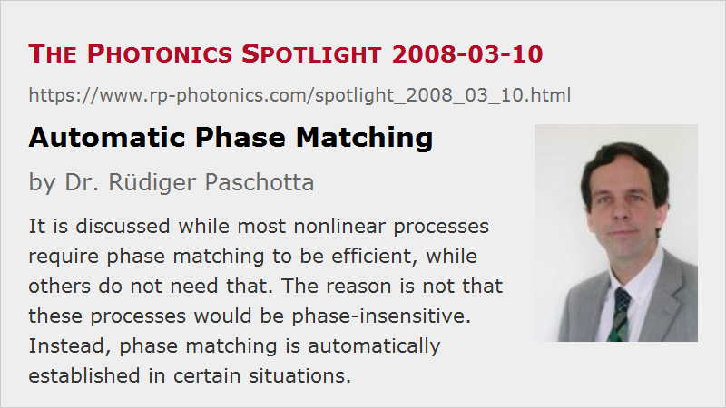

Automatic Phase Matching
Posted on 2008-03-10 as a part of the Photonics Spotlight (available as e-mail newsletter!)
Permanent link: https://www.rp-photonics.com/spotlight_2008_03_10.html
Author: Dr. Rüdiger Paschotta, RP Photonics Consulting GmbH
Abstract: It is discussed while most nonlinear processes require phase matching to be efficient, while others do not need that. The reason is not that these processes would be phase-insensitive. Instead, phase matching is automatically established in certain situations.

Ref.: encyclopedia articles on phase matching, self-phase modulation, four-wave mixing, Raman scattering, parametric amplification
It is well known that nonlinear interactions usually require phase matching to be efficient. Essentially, the nonlinear mixing products generated at different locations e.g. within an optical fiber or a nonlinear crystal are described by complex amplitudes, which don't sum up to large values unless they are added up in phase. However, some nonlinearities appear not to require phase matching; examples are self-phase modulation and Raman scattering. Are those phase-insensitive processes? It turns out that this is not the case. These processes are phase matching, but that condition is established automatically. Different mechanisms can lead to such a situation.
In the case of self-phase modulation, considered for a single-frequency signal e.g. within a fiber, the situation is simple: only one frequency component is involved, so there is no way in which differential phase shifts can be introduced. More sophisticated is what happens with an ultrashort pulse, because this inevitably has some finite spectral width, so in that case differential phase shifts for different frequency components are possible, and these do have an effect. But this leads us into four-wave mixing, which indeed involves phase matching issues. Note that four-wave mixing and self-phase modulation aren't just different kinds of nonlinearity; they are both consequences of the χ(3) nonlinear response of the medium, just in different situations concerning the optical spectrum.
The physics are again quite different for stimulated Raman scattering. Here, energy is transferred from a shorter-wavelength pump wave to a longer-wavelength signal wave. That transfer can actually again be described with amplitudes, and is surely not phase-insensitive. However, it is done by the influence of an acoustic wave in the material, and that itself is generated by the pump and signal beam. If the signal phase changes for any reason during propagation in the fiber, so does the local phase of the sound wave, and the mentioned transfer can always take place in the same direction. So we have a process which is not phase-insensitive, but we don't have to care about phase matching, because we get it automatically.
The latter situation is somewhat analogous to parametric amplification, where an optical idler beam plays the role of the acoustic wave in Raman scattering. The idler is also generated from pump and signal (via difference frequency generation), so that its phase is suitable for transferring power from the pump to the signal. However, an important difference is that the idler wave propagates over long distances in the crystal, rather than being generated only locally. Therefore, phase matching issues arise, and these involve all three waves: pump, signal and idler.
There is actually a situation where parametric amplification is more similar to Raman scattering: when the nonlinear crystal is strongly absorbing for the idler wave, see The Photonics Spotlight 2007-12-11. Indeed, the phase-matching bandwidth can be strongly increased in that case – at the price, however, that the parametric gain is much lower.
This article is a posting of the Photonics Spotlight, authored by Dr. Rüdiger Paschotta. You may link to this page and cite it, because its location is permanent. See also the RP Photonics Encyclopedia.
Note that you can also receive the articles in the form of a newsletter or with an RSS feed.
Questions and Comments from Users
Here you can submit questions and comments. As far as they get accepted by the author, they will appear above this paragraph together with the author’s answer. The author will decide on acceptance based on certain criteria. Essentially, the issue must be of sufficiently broad interest.
Please do not enter personal data here; we would otherwise delete it soon. (See also our privacy declaration.) If you wish to receive personal feedback or consultancy from the author, please contact him e.g. via e-mail.
By submitting the information, you give your consent to the potential publication of your inputs on our website according to our rules. (If you later retract your consent, we will delete those inputs.) As your inputs are first reviewed by the author, they may be published with some delay.
|  |
If you like this page, please share the link with your friends and colleagues, e.g. via social media:
These sharing buttons are implemented in a privacy-friendly way!